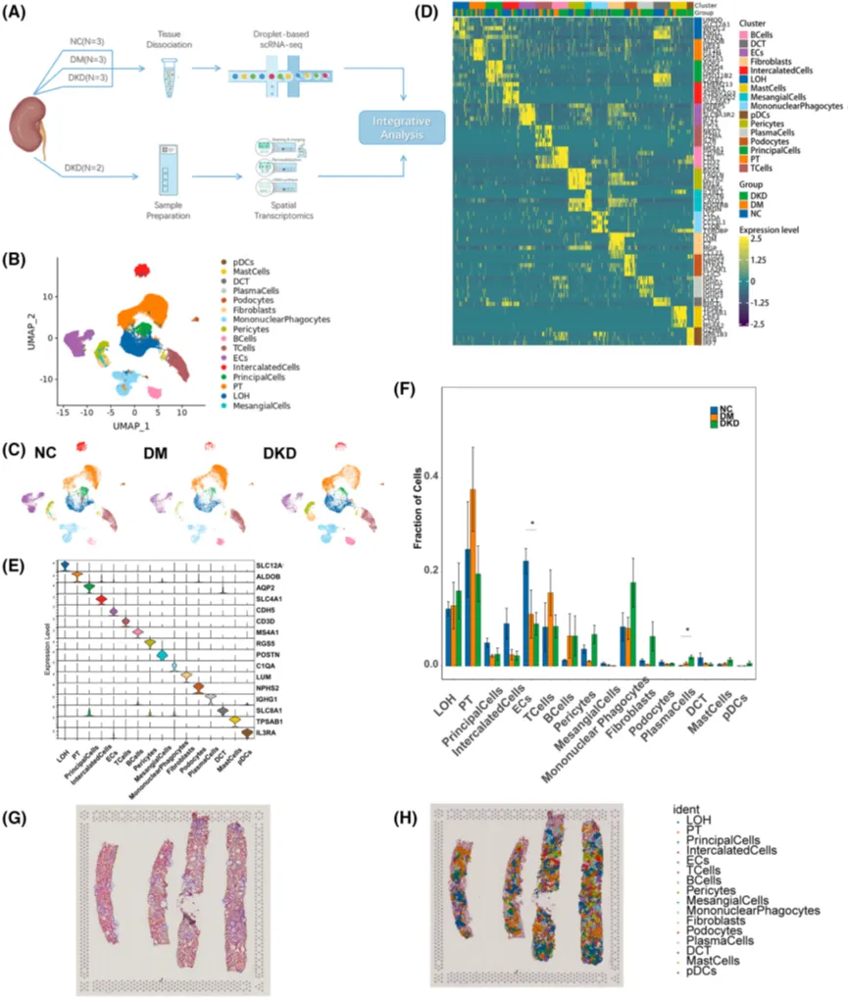
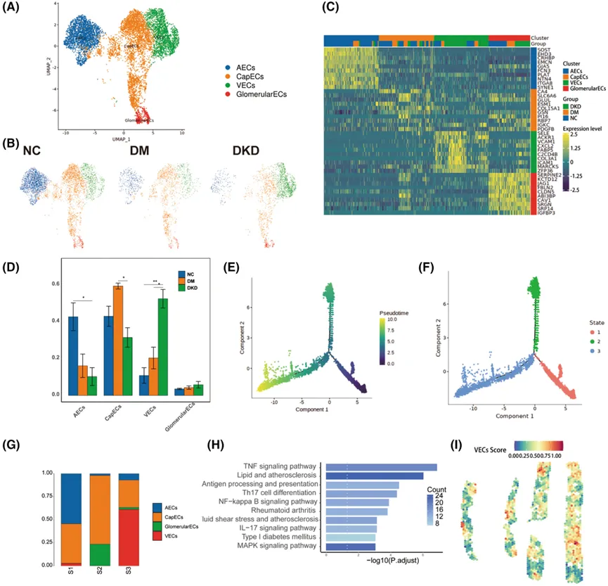
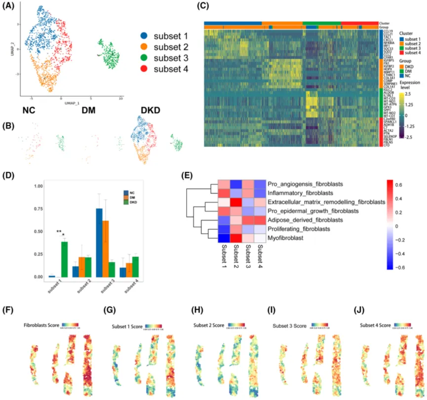
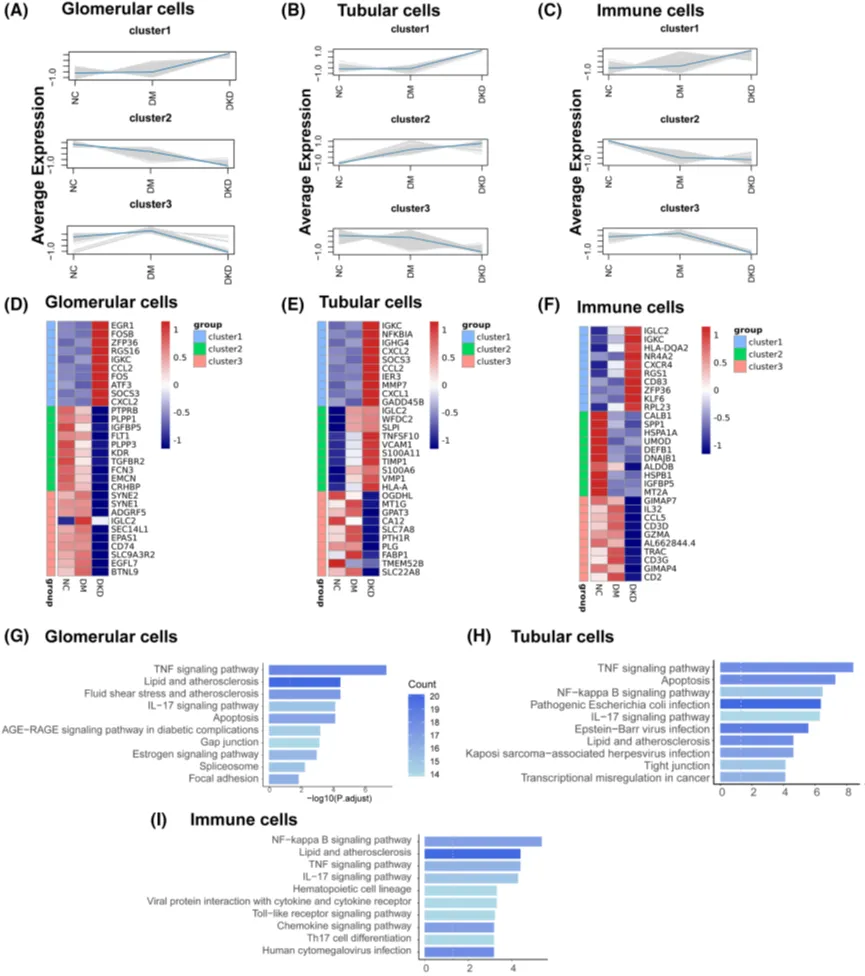
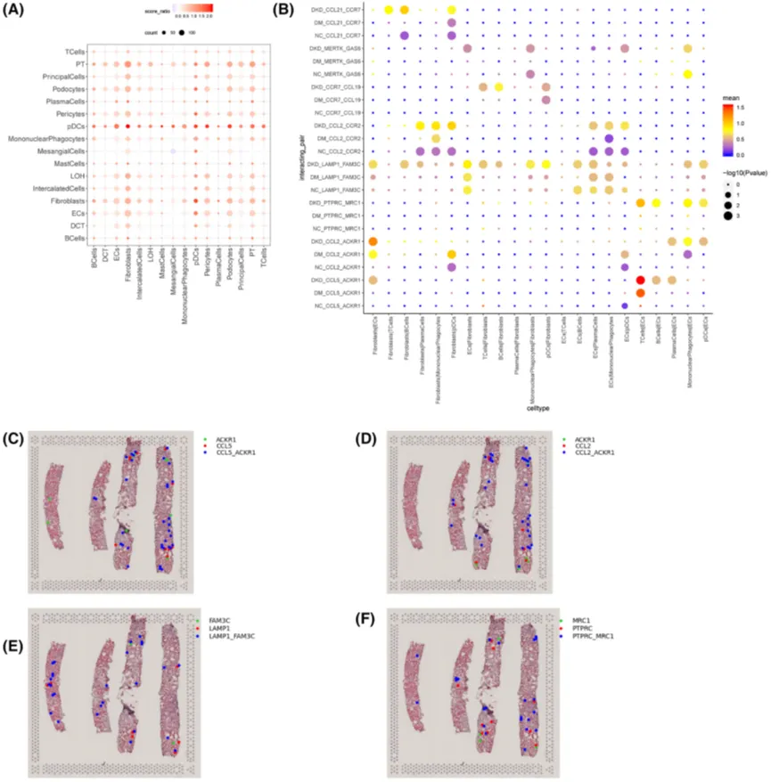

临床样本+单细胞+空转=IF4.8？
原文：https://mp.weixin.qq.com/s?__biz=MzAwMzIzOTk5OQ==&mid=2247508744&idx=1&sn=1bc02443acab6d1720fe64e0334ce57a&chksm=9b3cda58ac4b534e3bf7ed2ab225d104d9976c5dc21b8443f88d3a555c5db67449b622ac91b4#rd 合集：单细胞教程全收录 / 空间转录组 / 文献速递
写在前面
如大家所见这篇文章采用单细胞+空间转录组(10X Visium平台)联合研究了DKD的临床穿刺样本，阐明了DKD进程中免疫与纤维化相关通路的关系。令人不解的是距2021年空间转录组被评为年度技术[2]仅过去短短两年，虽说《FASEB Journal》也是JCR Q1文章(2022年投稿时)，但这篇文章的影响因子已然破5 (IF=4.8)。遵循好奇心，拜读一下。更多空转教程可见：空间转录组学习手册合辑Seurat空间转录组学习手册 Scanpy空间转录组学习手册 Stereopy空间转录组学习手册 Squidpy空间转录组学习手册
**主要结果 **
●背景知识就不介绍了，我们来看一下主要结果，作者首先对来自scRNA-Seq的九个样本进行了初步的处理(Fig.1A)，完成了分群、注释操作(Fig.B-C)与对应marker gene的展示(Fig.D-E)。细胞比例差异方面，显著的有：DKD组相较于糖尿病组(DM)具有更少的ECs与夹层细胞和更多的纤维化细胞与免疫细胞(Fig.1F)。为进一步分析，作者对两个DKD病人的肾脏采取了肾脏穿刺并基于10X Genomics平台完成建库(Fig.1G-H)。

Figure 1
●作者将ECs分为了venous (VECs), arterial(AECs), capillary (CECs), and glomerular (GECs) ECs三种亚群(Fig.2A-B)。接着，作者对这些亚群的基因表达(Fig.2C)与比例组成(Fig.2D)进行了差异分析。拟时序分析展示了这些ECs的亚群在state中的分布存在差异性(Fig.2E-G)，考虑到VEGs在DKD样本中的比例较高，作者通过KEGG富集分析发现该亚群的差异基因主要富集于TNF-α、TH17细胞分化、NFκB等炎症与免疫相关信号通路中；去卷积结果显示VECs与肾脏纤维化存在空间相关性(Fig.2I)。

Figure2
●类似地，作者对成纤维细胞也进行了亚群+基因表达与细胞比例差异分析(Fig.3A-B)，DKD组中表现出了比DM与NC组更多比例的成纤维细胞。在GSVA分析中，这些亚群在炎症、脂质代谢等方面展示出了不同的特征(Fig.3E)。纤维化的评分也主要集中在纤维细胞分布的区域(Fig.F-J)（这里似乎有点因为A、所以A的感觉？）。

Figure 3
●接下来，作者将肾脏细胞类型分为肾小球细胞、肾小管细胞、免疫细胞三种类型，并通过hcluster对细胞的表达矩阵进行聚类，共获得3个cluster (Fig.4A-C)，其中cluster在NC→DM→DKD的进程中总体表达量递增。肾小球的Top 10 DEG中呈现出于ROS、内皮细胞失能、炎症等相关的通路(Fig.4D)，富集分析结果同样支持差异分析结果(Fig.4G)。随后作者对肾小管、免疫细胞做了类似的差异分析与富集分析(Fig.4E-F&H-I)，结果与肾小球部分类似。

Figure 4
●随后作者对数据进行了细胞通讯分析(ST数据)，发现NC与DM间并无显著差异通路，而DKD相较于NC组而言成纤维细胞展现出了与PT、principal cells、podocytes、pericytes、LOH、ECs间存在更强的互作关系(Fig.5B)。免疫细胞方面CCL5在T Cell中的表达可能与ECs中的ACKR1表达存在互作，从而发生免疫招募作用(Fig.5C)。其余几种存在差异表达的配受体也与DKD具有一定关联(Fig.5D-F)。

Figure 5
随便聊聊
可以看出这篇文章的分析思路与流程中规中矩，完成了scRNA与ST的联合分析，运用了拟时序分析、基因集评分、细胞通讯、去卷积分析等常规/进阶分析方法。但是ST数据的特色分析占比较低。似乎呈现的大部分结果与ST并无关联。其中拟时序分析的插入较为突兀，且无对结果的进一步探讨。对基因表达矩阵的聚类也可以替换为WGCNA等更高级的方法。此外，文中还有一些语法和逻辑不太通顺。总体来说，这篇文章值得想要了解单细胞与空转的同学短平快的读一读。更多空转教程可见：空间转录组学习手册合辑Seurat空间转录组学习手册 Scanpy空间转录组学习手册 Stereopy空间转录组学习手册 Squidpy空间转录组学习手册
参考文献
[1]: Chen D, Shao M, Song Y, Ren G, Guo F, Fan X, Wang Y, Zhang W, Qin G. Single-cell RNA-seq with spatial transcriptomics to create an atlas of human diabetic kidney disease. FASEB J. 2023 Jun;37(6):e22938.
[2]: Marx, V. Method of the Year: spatially resolved transcriptomics. Nat Methods 18, 9–14 (2021).

如何联系我们

 公众号后台消息回复不便，这里给大家留一下领取资料及免费服务器(足够支持你完成硕博生涯的生信环境)的微信号 ，方便各位随时交流、提建议（科研任务繁重，回复不及时请见谅）。此外呼声一直很高的交流群 也建好了，欢迎大家入群讨论：
公众号后台消息回复不便，这里给大家留一下领取资料及免费服务器(足够支持你完成硕博生涯的生信环境)的微信号 ，方便各位随时交流、提建议（科研任务繁重，回复不及时请见谅）。此外呼声一直很高的交流群 也建好了，欢迎大家入群讨论：
大家可以阅读完这几篇之后添加给生信入门初学者的小贴士 如何搜索公众号过往发布内容

 您点的每个赞和在看，我都认真当成了喜欢
您点的每个赞和在看，我都认真当成了喜欢